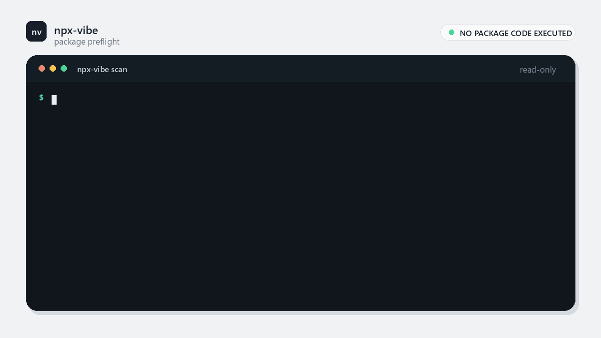

Line-level evidence
Findings name the file, matched behavior, and bounded source excerpt.
Evidence-first package checks
npx-vibe adds a practical safety pause before npx. It verifies the
tarball, inspects install-time behavior, and gives you the evidence behind every
Proceed, Caution, or Block verdict.

A deliberate checkpoint
The default path is deterministic, local, and key-free. Package code is not executed during the review.
Pin the requested package to an exact npm version and collect registry context.
Download without execution and verify the tarball against npm integrity metadata.
Review lifecycle hooks and selected source for secrets, network, shell, and obfuscation signals.
Read a source-backed verdict, then choose whether the package should execute.
Explainable by design
Risk scores are useful only when you can inspect what produced them. npx-vibe keeps popularity signals, source findings, and model interpretation clearly separated.
See how scoring works →Findings name the file, matched behavior, and bounded source excerpt.
Age, maintainers, downloads, repository activity, and install hooks stay visible.
Integrity-keyed history shows whether selected code changed between versions.
Execution uses ignored install scripts unless reviewed scripts are intentionally allowed.
Representative output
Compare the report shape for clean packages, install hooks, optional AI, and synthetic malicious behavior.
Optional AI review
Heuristics remain the baseline. When a package triggers review, choose local Ollama or an online provider and keep the resolved provider and model visible in the result.
--ai online --provider gemini
Start with a read-only check
npx command.No account, API key, or global installation is required for the default scan.
npx npx-vibe --check <package>
npm install -g npx-vibe
npx-vibe is a pre-execution scanner, not a sandbox, antivirus product, or formal audit. It surfaces risky signals and supporting evidence; it cannot prove that a package is safe.